iPhone 18 Pro
9999元起
- 业界首款 2nm 工艺 A20 Pro，图形性能 +40%
- 主摄首次支持四档物理可变光圈
- 0.5×–8× 光学品质变焦
9 月 12 日 20:00 预购 · 9 月 18 日发售
一个入口装两块内容：看现在——在售机型的参数与国行价格，每日自动刷新；看过去——1976 年车库里的 Apple I 到 2026 年的折叠屏 iPhone Duo，十条产品线 293 条里程碑。点下面任意一张卡片切换。
6 款全部列出：官方图 + 国行起售价 + 三个最值得看的点 + 开卖时间。


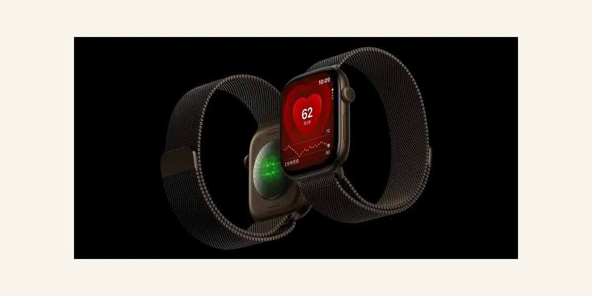
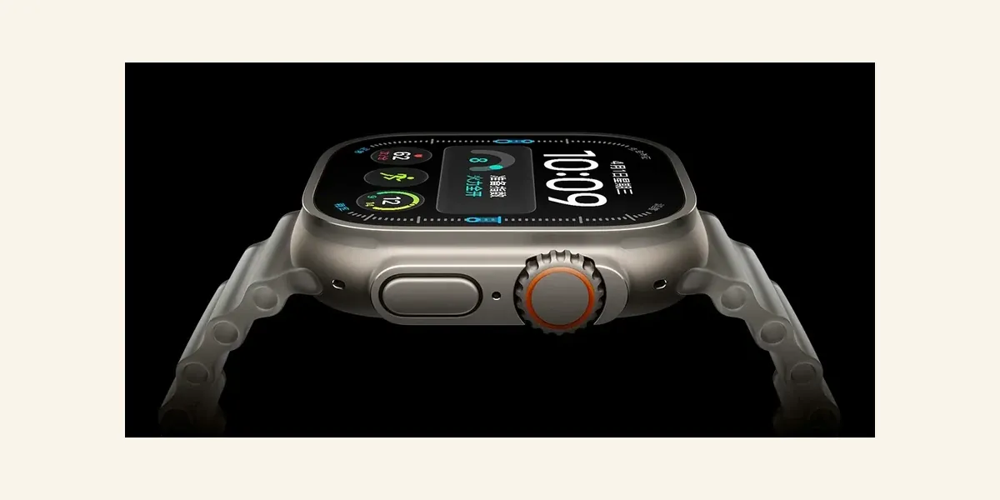

以上 6 张官方图分别取自苹果中国官网 iphone-18-pro / iphone-duo / apple-watch-series-12 / apple-watch-ultra-4 / airpods-5 产品页与商店机型图，版权归 Apple Inc. 所有，本页仅作新品资讯介绍引用，不作商业使用。
10 张苹果官网真图，左右滑动查看；点任意一张可打开高清原图。
以上 10 张图均取自苹果中国官网各产品页与苹果官方图片服务器（storeimages.cdn-apple.com），版权归 Apple Inc. 所有，本页仅作新品资讯介绍引用，不作商业使用。
三组最常被问的对比，看图就够（均为官方公布数据）。
先看三款新 iPhone 的逐项对比，再看手表与耳机；表格可左右滑动。
| 项目 | iPhone 18 Pro | iPhone 18 Pro Max | iPhone Duo |
|---|---|---|---|
| 屏幕 | 6.3″ 超视网膜 XDR | 6.9″ 超视网膜 XDR | 7.6″ 内屏 + 5.4″ 外屏（可折叠） |
| 芯片 | A20 Pro（台积电 2nm，6 核 CPU + 7 核 GPU + 双 16 核神经网络引擎）· 自研 C2 基带 | ||
| 影像 | 4800 万三摄：主摄四档物理可变光圈（ƒ/1.48 / ƒ/1.8 / ƒ/2.8 / ƒ/4.0）+ 超广角 + 长焦，0.5×–8× 光学品质变焦 | 4800 万主摄 + 4800 万超广角（无长焦） | |
| 续航 | 视频播放最长 34 小时 | 视频播放最长 43 小时 | 内屏 31 小时 / 外屏 44 小时 |
| 解锁 | Face ID | 侧边 Touch ID | |
| SIM | 双实体卡 / 实体卡 + eSIM / 双 eSIM | 全球仅 eSIM | |
| 配色 | 黑色、银色、冰川蓝、勃艮第酒红 | 星光白、夜空色 | |
| 国行起售 | 9999 元 | 10999 元 | 15999 元 |
| 发售 | 9 月 18 日 | 10 月 23 日 | |
「0.5×–8× 光学品质变焦」中的 8 倍画面由 4 倍长焦截取传感器中央区域、结合图像处理输出（1200 万像素），并非独立的 8 倍镜头。国行视频播放续航为 34 / 43 小时；发布会提到的 45 小时对应部分市场的纯 eSIM 版本。
| 项目 | Apple Watch Series 12 | Apple Watch Ultra 4 | AirPods 5 |
|---|---|---|---|
| 芯片 | S11 | S11 | H2 |
| 形态 / 屏幕 | 42 / 46mm，2000 尼特全天候视网膜屏 | 49mm 钛金属，3000 尼特 | 无耳塞式入耳 |
| 关键升级 | 全新健康感测系统，后台心率采样频率提升到上代 60 倍，新增「准备指数」与睡眠评分 | 同款健康感测系统，双频 GPS、100 米防水、内置警笛 | 首次标配主动降噪，降噪较上代提升最高 50%；支持头部动作回应 Siri |
| 续航 | 24 小时（低电量模式 38 小时） | 50 小时（低电量模式 84 小时） | 降噪聆听 5 小时，配充电盒最长 22 小时 |
| 国行起售 | 2999 元（铝金属 42mm GPS） | 6499 元 | 999 元 |
| 发售 | 9 月 18 日 | 9 月 18 日 | 9 月 18 日 |
发布会公布的国行建议零售价，单位：元；金色为起售价。
| 机型 | 256GB | 512GB | 1TB | 2TB |
|---|---|---|---|---|
| iPhone 18 Pro | 9999 | 11999 | 15499 | 20499 |
| iPhone 18 Pro Max | 10999 | 12999 | 16499 | 21499 |
| iPhone Duo（折叠屏） | 15999 | 17999 | 21499 | 26499 |
价格引自苹果中国官网（apple.com.cn）在售页与新浪财经、IT之家、每日经济新闻、界面新闻、腾讯新闻等现场报道，已交叉核对（2026-09-10）。AirPods 5 无线充电盒版多数报道为 1149 元、IT之家等记为 1199 元，最终以苹果官网标价为准。
按先后排列，灰色节点表示已经过去。
AirPods 5 已在发布会后开放订购，9 月 18 日统一发售。档期引自苹果中国官网与现场报道，若苹果后续调整以官网公告为准。
这个板块怎么用：它替你盯着苹果新品的全网消息，而不是让你自己刷爆料。每天自动从国内（财新 / 36氪 / 今日头条等）+ 海外（彭博社 / 9to5Mac / The Verge 等）多源检索，交叉核对后沉淀到上方「每日自动更新」信息流。
阅读须知：2026 秋季发布会已于 9 月 10 日凌晨召开，本页「新品 / 参数 / 价格」均为官方已公布信息；尚未官宣的传闻一律标注「待官方确认」。一切以苹果官网为准，不构成购买或投资建议。
资料来源：
正文参数、价格与日期均引自上述来源，数据截至 2026-09-10，每日自动刷新。若苹果官网后续调整，以官网为准。
从 1976 年车库里那块手工焊装的电路板，到 2026 年首款折叠屏 iPhone——半个世纪里，苹果用 Macintosh、iPod、iPhone、iPad、Apple Watch 与自研芯片，反复重新定义什么叫「个人计算」。本页按 10 条产品线逐年拆开，共 293 条可核对的里程碑，全部标注日期，并附真实产品图与出处。
半个世纪被切成六段，每一段都有一个明确的转折点。
先点产品线切换，再点开想看的年代分组——默认只展开第一条，不会一拉到底。打印本页会自动展开全部。
苹果的起点与主线：把「个人电脑」从概念做成日常工具
沃兹尼亚克手工焊装的单板计算机，售价 666.66 美元，共售出约 200 台。它是苹果的第一件产品，也是此后一切的原点。
首款大规模量产的彩色图形个人电脑，在西海岸电脑展首发。它让苹果从车库公司变成真正的生意，一直卖到 1993 年。
面向商用市场，却因散热与稳定性问题失败，是苹果早期最著名的一次产品教训。
首款采用图形界面加鼠标的商用电脑，售价 9995 美元。商业上失败，却为 Macintosh 铺平了道路。
首台面向大众的图形界面个人电脑：128KB 内存、9 英寸黑白屏、2495 美元，配一支鼠标。
首款支持 SCSI 与内存扩展的 Mac，成为当时寿命最长、最畅销的机型之一。
首个模块化、可插卡、支持彩色显示的 Mac 系列，摆脱了一体机限制。
苹果首款电池供电的便携 Mac，重达 7.2 公斤，市场反响冷淡。
100/140/170 三款同时发布，首次把键盘后移、掌托前置并内置轨迹球——这个布局此后成为所有笔记本的标准。
首款采用 PowerPC 处理器的 Mac，是苹果与 IBM、摩托罗拉三方联盟的成果。
乔布斯回归后以约 1 亿美元买断 Power Computing 的授权，结束 Mac 兼容机时代，重新收紧硬件控制。
半透明一体机，砍掉软驱、只留 USB，上市 139 天卖出 80 万台，把濒死的苹果拉回正轨。
首款面向消费者的笔记本，也是首款内置 Wi-Fi 的消费电脑，彩色「蛤壳」造型成为一代人的记忆。
钛金属机身、一英寸厚，是当时最薄的笔记本之一。
半球底座加可转动液晶屏的「台灯」造型，被公认为工业设计经典。
苹果首次采用 64 位处理器，也是最后一款塔式风冷旗舰。
把整机塞进显示器背后的「一体机」形态，成为此后 iMac 的标准。
WWDC 上乔布斯宣布 Mac 将在两年内从 PowerPC 迁移到 Intel 处理器，Rosetta 过渡层同步登场。
iMac 与 MacBook Pro（取代 PowerBook 命名）同日发布，性能大幅提升同时功耗明显下降。
乔布斯从牛皮纸信封里把它抽出来：最厚处 1.94 厘米，首款大规模采用一体成型铝合金与固态硬盘的笔记本。
2880×1800 视网膜屏，取消光驱与机械硬盘，苹果开始用屏幕密度定义高端。
「垃圾桶」造型的极小体积工作站，因散热与扩展性受限，此后多年没有实质更新。
全机只有一个 USB-C 口，首次引入蝶式键盘，也是苹果历史上争议最大的一代键盘。
一体机形态的工作站，最高 18 核 Xeon，为专业用户争取到两年时间。
蝶式键盘被剪刀脚妙控键盘取代，苹果实际上承认并纠正了自己的键盘路线。
WWDC 2020 宣布 Mac 将在两年内过渡到 Apple silicon，终结长达 14 年的 Intel 时代。
MacBook Air、MacBook Pro、Mac mini 三款首发；无风扇的 Air 也全面超越前代 Intel 机型，续航翻倍。
七种配色、11.5 毫米厚的一体机，重拾 iMac G3 的彩色传统。
MacBook Pro 14 与 16 英寸：刘海屏登场，HDMI、SD 卡槽与 MagSafe 充电全部回归。
用 UltraFusion 把两颗 M1 Max 拼成一颗，Mac Studio 成为新的桌面旗舰。
全新模具的 MacBook Air：刘海屏、MagSafe、更薄机身。
MacBook Pro 与 Mac mini 同步更新。
自研芯片版 Mac Pro 上市，Mac 全线完成向 Apple silicon 的迁移。
首批 3nm 桌面芯片，引入硬件光线追踪与动态缓存。
13 与 15 英寸双尺寸，成为当年最主流的 Mac。
MacBook Pro、Mac mini、iMac 同一周内更新，M4 Pro / Max 支持雷雳 5。
Mac Studio 更新，M3 Ultra 支持最高 512GB 统一内存，成为本地跑大模型的热门机型。
首个在 GPU 每颗核心内集成神经加速器的 M 系列芯片，首发于 14 英寸 MacBook Pro，同步用于 iPad Pro 与 Vision Pro。
苹果同月更新轻薄线与专业线，并新增 599 美元起的入门笔记本 MacBook Neo，填上长期空缺的最低价位。
MacBook Air M5、MacBook Pro（M5 Pro / M5 Max）与 MacBook Neo 同步上市。
苹果首款 2nm 芯片 M6 首发在 899 美元起的 Mac mini 上；Mac Studio 最高 512GB 统一内存，支持雷雳 5 组建 AI 推理集群。
Mac mini 与 Mac Studio 正式开卖，部分高内存配置后续分批到货。
苹果确认 Mac Pro 将停产，桌面专业线让位于 Mac Studio——塔式工作站的时代正式结束。
重新发明手机的那一件产品，也是苹果收入的绝对主力
旧金山 Macworld，乔布斯一句「今天，苹果要重新发明手机」：3.5 英寸多点触控屏、完整网页浏览器、iTunes 同步。
4GB 版 499 美元、8GB 版 599 美元，首周末售出约 27 万台。
加入 3G 网络与 GPS，价格降到 199 美元，同时带来改变行业的 App Store。
首次在名称里标注速度（S 即 Speed），加入摄像、语音控制与指南针。
视网膜屏、不锈钢中框、首款前置摄像头，也遭遇了著名的「天线门」。
在乔布斯逝世前一天发布，首次带来 Siri 与 800 万像素摄像头。
4 英寸 16:9 屏幕、Lightning 接口、nano-SIM，机身改为铝合金。
5s 首次采用 Touch ID 指纹识别与 64 位 A7 芯片；5c 是苹果唯一一次塑料彩壳旗舰尝试。
首次采用双尺寸策略，5.5 英寸 Plus 把大屏潮流推向主流。
3D Touch、Live Photo，摄像头升级到 1200 万像素。
4 英寸小屏配旗舰芯片，成为苹果历史上最长寿的机型之一。
取消 3.5mm 耳机孔、首次 IP67 防水，Plus 首次配备双摄。
跳过 9 直接进入 X。iPhone X 用 Face ID 取代 Touch ID、取消 Home 键，全面屏与刘海从此成为标配。
首次一次发布三款，XR 以 LCD 屏与单摄下探价位。
「Pro」之名首次出现在 iPhone 上，三摄系统与夜间模式登场。
沿用 iPhone 8 外壳加 A13 芯片，用最低价格提供旗舰性能。
全系首次支持 5G，直角边中框回归，引入 MagSafe 磁吸生态与 mini 机型。
刘海缩小，ProMotion 120Hz 首次登陆 iPhone（仅 Pro 机型）。
最后一款 4.7 英寸小屏 iPhone，2024 年后正式淡出。
Pro 引入灵动岛与常亮显示；全系带来车祸检测与卫星紧急求救。
全系换上 USB-C（欧盟法规推动），Pro 首次采用钛金属中框与可自定义的操作按钮。
新增「相机控制」实体按键，全系为 Apple Intelligence 铺路；Pro 屏幕增至 6.3 与 6.9 英寸，首次采用蒸气腔散热。
「e」系列起点，首发苹果自研 5G 基带 C1，取代 SE 成为入门机型。
17、17 Pro、17 Pro Max 与全新 iPhone Air 四款同发。全系标配 120Hz ProMotion 与常亮显示；Air 是史上最薄 iPhone，首发 N1 无线芯片与 C1X 基带；Pro 改回铝合金机身以改善散热。
首发覆盖 63 个国家和地区，9 月 26 日扩展到更多市场。
接替 16e：A19 芯片配 C1X 基带，256GB 起售 4499 元。
6.3 与 6.9 英寸，A20 Pro 芯片，首次采用 ƒ1.48–ƒ4.0 可变光圈，256GB 起售 9999 元。
苹果首款折叠屏：5.4 英寸外屏、7.6 英寸内屏，侧边 Touch ID，是首款支持 Apple Pencil 的 iPhone，搭载 A20 Pro 与 C2 基带，256GB 起售 15999 元、2TB 版 26499 元。
9 月 12 日 20:00 开启预购，9 月 18 日起陆续到店。
10 月 16 日 20:00 开启预购，10 月 23 日正式开卖。
夹在手机与电脑之间的第三类设备，也是苹果最持久的形态实验
乔布斯在旧金山发布 9.7 英寸平板，把它定义为「手机与笔记本之间的第三类设备」。
首日售出约 30 万台，80 天卖出 300 万台。
更薄更快，加入前后摄像头与 Smart Cover，成为当年最畅销的平板。
首款采用视网膜屏的 iPad，2048×1536 分辨率。
首次出现 7.9 英寸小尺寸产品线。
Air 命名登场，重量降到 469 克；mini 2 同步升级视网膜屏。
Air 2 首次引入全贴合屏幕与 Touch ID。
苹果首款 Pro 平板，同时发布 Apple Pencil 与 Smart Keyboard，iPad 开始向生产力靠拢。
把 Pro 能力下放到便于携带的尺寸。
引入 ProMotion 120Hz 自适应刷新率，手写延迟大幅下降。
取消 Home 键、改用 Face ID 与 USB-C，Apple Pencil 改为磁吸吸附并支持无线充电。
两条中端线同时获得部分 Pro 能力。
屏幕增至 10.2 英寸，成为教育市场的主力机型。
首次搭载激光雷达扫描仪与妙控键盘，把 iPad 推向桌面替代方案。
首发 A14 芯片，采用与 Pro 相同的全面屏设计，并把 Touch ID 集成到顶部电源键。
首次把 Mac 的 M 系列芯片装进 iPad，12.9 英寸升级 Mini-LED 屏幕。
基础款延续 A13 芯片与经典外观。
M1 下放到 Air 产品线。
iPad 首次换用 USB-C 并改直角边；Pro 引入手写笔「悬停」检测。
全年只更新了 iPadOS 17，硬件没有换代，是 iPad 历史上罕见的空白年。
Pro 首次采用双层串联 OLED 并做到 5.1 毫米厚，彻底刷新平板厚度纪录；Air 增加 13 英寸版本。
A17 Pro 芯片，支持 Apple Pencil Pro，起步容量翻倍。
基础款更新到 A16，但内存不足以支持 Apple Intelligence，成为当年最大的遗憾。
M5 带来最高 3.5 倍于 M4 的 AI 性能，配备 N1 无线芯片与 C1X 蜂窝基带。
从 M3 升到 M4，内存提到 12GB，加入 Wi-Fi 7 与自研 C1X 基带。
形成 iPad（A16）、iPad mini（A17 Pro）、iPad Air（M4）、iPad Pro（M5）四条线；iPadOS 27 已随秋季更新推送。
把一千首歌装进口袋，替苹果撬开了消费电子的大门
5GB 机械硬盘、可存 1000 首歌、10 小时续航，售价 399 美元。发布时被普遍嘲讽「太贵」。
首次采用触控式转盘，Windows 版本同步推出。
机身变薄并改用底座接口；同日上线的音乐商店以 0.99 美元一首单曲重塑了整个唱片业。
4GB 微硬盘、五色铝壳，成为当时最畅销的 iPod，也让苹果意识到「便宜一点」的威力。
点击轮取代四个独立按钮，这一交互沿用多年。
无屏幕、纯随机播放，128MB 起售 99 美元，把 iPod 带进最低价位。
用闪存取代微硬盘，把 mini 做到极薄，同时宣告 mini 线终结。
首次支持视频播放，2.5 英寸彩屏。
铝合金外壳回归，nano 首次出现多彩版本。
基于 iPhone 的触摸屏 iPod，只有 Wi-Fi，成为 iOS 生态最便宜的入口。
弧形超薄机身，加入加速度计，横过来就能进入 Cover Flow。
首次内置摄像头与 FM 收音机。
nano 变成 1.5 英寸方形触屏并可夹在衣服上，是争议最大的一代。
nano 回到长方形加 Home 键；touch 5 换上 4 英寸屏与 Lightning 接口。
A8 芯片，外观基本未变，主要靠配色延续话题。
苹果砍掉无屏与纯播放两条线，只保留 iPod touch。
A10 芯片，是最后一款新 iPod。
苹果宣布售完即止，21 年的 iPod 产品线正式终结。
从「戴在手上的通知器」长成最完整的消费级健康监测设备
库克的「One more thing」第一次亮出手表，定位为健康与通知设备。
分 Sport、Watch、Edition 三档，18K 金版售价一万美元起；初代不含 GPS，必须连着 iPhone 用。
Series 2 加入 GPS 与 50 米防水并首次提供陶瓷表壳，手表开始能独立运动。
首次支持蜂窝网络，可以脱离 iPhone 通话与听音乐。
屏幕增大 30%、数字表冠加入触觉反馈，并首次支持 ECG 心电图。
常亮视网膜屏首次登场，手表不必再抬手才亮。
加入血氧检测；SE 成为第一条低价产品线。
表盘更大、边框更窄，支持快速充电。
加入体温感应与车祸检测；全新的 Ultra 线以 49mm 钛金属表壳、100 米防水与更长续航面向户外与潜水。
S9 芯片带来「双指互点」手势，屏幕峰值亮度到 2000 尼特。
机身更薄更轻，屏幕面积再增，扬声器可直接外放音乐。
三款同时更新：S10 芯片、首次全系支持 5G，加入高血压提醒与睡眠评分；Ultra 3 成为首款支持卫星通信的 Apple Watch。
需搭配 iPhone 11 或更新机型并运行 iOS 26，SE 3 首次获得常亮屏。
苹果砍掉 Series 6 / 7 / 8、Ultra 1 与 SE 2 的支持，Siri AI 只对较新机型开放；沿用八年的对讲机功能被移除。
全新「健康感测系统」把心率采样从每 5 分钟改为每 5 秒、心率变异性采样频率最高提升 24 倍，并带来 1 到 10 分的「准备度」评分；S11 芯片首次从 A20 Pro 架构衍生；停用六年之久的陶瓷表壳回归。
电池容量增加 5%，日常续航达 50 小时、低电量模式 84 小时、极限运动模式 45 小时，15 分钟快充可多用 18 小时。
Series 12 起售 2999 元，Ultra 4 起售 6499 元，与上一代同价。
AirPods、HomePod、Apple TV——苹果在客厅与耳朵上的三场战役
与 iPhone 7 同步发布，用 W1 芯片解决蓝牙配对的麻烦。发布时被大量嘲讽，两年后成为整个行业的默认形态。
首批延迟近三个月，随后长期供不应求。
加入 H1 芯片、无线充电盒与免手动的「嘿 Siri」。
首款入耳式主动降噪，硅胶耳塞配通透模式。
头戴式产品，铝合金耳罩加记忆棉，售价 549 美元。
采用 Pro 的外形但不带耳塞，加入空间音频。
降噪能力翻倍，加入触控调节音量与自适应通透模式。
换上 USB-C 接口，支持无损音频并提升防尘防水到 IP54。
首次把主动降噪下放到非入耳机型，是 Open-fit 降噪的第一次真正可用。
仅更换接口，硬件基本未变，被普遍认为是敷衍更新。
降噪比 Pro 2 再强一倍，首次加入耳内心率传感与面对面对话的实时翻译，防水升至 IP57，售价维持 249 美元。
换上 H2 芯片，加入自适应音频、对话感知、语音隔离与实时翻译，价格继续维持 549 美元。
WWDC 上发布，主打音质而非语音助手，定位与当时的智能音箱潮流不同。
349 美元，市场反响明显不及预期。
99 美元，用 U1 超宽带芯片实现手机「接力」。
苹果停产初代，把智能音箱交给 mini 一条线。
回归并加入温湿度传感与 Thread 边界路由，重新成为智能家居中枢的候选。
与 iPhone 同日发布，乔布斯称之为「业余爱好」，一台把 iTunes 内容搬上电视的盒子。
变小、变便宜，放弃内置存储改走流媒体租赁路线。
支持 1080p 输出。
首次引入 tvOS 与 App Store，配 Siri Remote 与体感游戏，从播放器变成平台。
支持 4K HDR 与杜比视界。
A12 芯片，支持高帧率 HDR 与用 iPhone 做屏幕色彩校准。
A15 芯片，机身缩小并去掉风扇，128GB 版带 Thread 与网口。
苹果下一个十年的赌注：把屏幕从墙上拿下来，放进视野里
苹果买下德国 AR 引擎公司，团队成为后续 ARKit 的核心。
WWDC 2017 把 AR 能力开放给所有 iPhone 与 iPad 开发者，为头显提前积累内容生态。
拿下体育与演出的 VR 直播技术。
据后续报道，苹果在 2022 年 5 月首次向董事会演示了完成度较高的头显。
WWDC 2023 的「One more thing」：苹果首款空间计算设备，3499 美元，M2 加 R1 双芯片，靠眼睛、手势与语音操作。
首批仅在美国发售，苹果门店提供预约试戴。
中国内地、中国香港、日本、新加坡等 9 个市场同步开卖。
把 Mac 桌面以超宽屏形式投到头显里，成为用户口碑最好的功能。
引入常驻小组件、升级版 Persona、新的 Jupiter 环境，Apple Intelligence 支持更多语言。
换装 M5 芯片并捆绑新的 Dual Knit Band 双层头带，渲染像素提升约 10%、支持最高 120Hz，AI 性能显著提升；10 月 22 日开售。
Spectrum Front Row 把湖人队比赛以 3D 图形加空间音频的形式带进 Vision Pro。
苹果加入盲文访问与无障碍阅读器，并支持脑机接口、吹吸式开关等控制方式。
Siri AI 以悬浮 3D 形态进入头显；新增全景照片转空间场景、曲面窗口，以及把 Mac 三维内容实时送入头显的 Spatial Preview。
与其他系统同日推送。
M5 版仍是唯一在售机型，苹果 2026 年没有发布任何新头显硬件，研发重心已转向无显示的 AI 智能眼镜。
苹果最重要的一次垂直整合：从买别人的芯片，到定义整条计算曲线
苹果买下这家做低功耗 PowerPC 的芯片公司，成为自研芯片的起点。
随初代 iPad 首发，之后用于 iPhone 4，是苹果第一款自主设计的 SoC。
首款双核，用于 iPad 2 与 iPhone 4S。
为 iPad 的视网膜屏加装四核 GPU。
苹果自研 CPU 架构首次登场。
全球首款 64 位移动处理器，同时引入 M7 运动协处理器，为 Touch ID 提供安全基础。
采用 20nm 工艺，A8X 用于 iPad Air 2。
性能大幅跃升，A9X 第一次让 iPad 的性能逼近笔记本。
首次采用大小核结构。
首个搭载神经网络引擎的芯片，为 Face ID 与 AR 提供算力，AI 从此时进入手机。
业界首批 7nm 芯片。
苹果称之为当时最快的智能手机芯片。
首批 5nm 移动芯片，用于 iPad Air 4 与 iPhone 12。
用于 iPhone 13 系列，能效比成为主要卖点。
用于 iPhone 14 Pro，性能提升相对保守。
首批 3nm 芯片，加入硬件光线追踪与 USB 3 控制器。
为 Apple Intelligence 重新设计内存带宽与神经网络引擎。
用于 iPhone 17 系列与 iPhone Air。
入门机型 iPhone 17e 沿用 A19 并搭配自研基带。
首批 2nm 手机芯片，用于 iPhone 18 Pro 与折叠屏 iPhone Duo；同代架构也衍生出手表用的 S11。
WWDC 宣布 Mac 转向 Apple silicon，计划两年内完成迁移。
5nm、8 核 CPU；连无风扇的 MacBook Air 也全面超越前代 Intel 机型，续航翻倍。
面向专业笔记本，内存带宽最高 400GB/s。
用 UltraFusion 把两颗 M1 Max 拼成一颗，用拼接换规模。
第二代芯片，用于重新设计的 MacBook Air。
用于 MacBook Pro 与 Mac mini。
首颗用于 Mac Pro 的自研芯片，完成 Mac 全线迁移。
首批 3nm 桌面芯片，引入硬件光追与动态缓存。
下放到 MacBook Air。
随 iPad Pro 首发，后用于 Mac 全线。
支持雷雳 5，内存带宽继续提高。
随 Mac Studio 登场，支持 512GB 统一内存，成为本地大模型的热门平台。
首个在 GPU 每颗核心内集成神经加速器的 M 系列芯片；首发 14 英寸 MacBook Pro，同步用于 iPad Pro 与 Vision Pro。
苹果首次提出 Fusion 架构与「超级核心」，两者均配 6 个超级核心加 12 个性能核心。
苹果首款 2nm 芯片，却首发在 899 美元起的 Mac mini 上——最便宜的 Mac 用上了最新工艺。
36 核 CPU、最高 80 核 GPU、512GB 统一内存，用于 Mac Studio；同代尚无 M6 Ultra。
AirPods 的无线音频芯片，解决蓝牙配对的易用性问题。
为 MacBook Pro 的 Touch Bar 提供指纹与安全功能。
超宽带芯片，用于 AirDrop 定向与空间感知，是后来「精确查找」的基础。
M1 内置安全隔区，Mac 首次具备与 iPhone 同级的硬件安全体系。
Vision Pro 的专用协处理器，把摄像头与传感器延迟压到 12 毫秒。
用于 Apple Watch Series 10，为后续 5G 与健康功能打底。
苹果首款自研 5G 基带，首发于 iPhone 16e，结束对高通的完全依赖。
N1 是自研 Wi-Fi 7 与蓝牙 6 芯片，C1X 比 C1 省电 30%；首发于 iPhone Air 与 iPhone 17 系列。
S11 从 A20 Pro 架构衍生，支撑每 5 秒一次的心率采样；C2 是 iPhone Duo 搭载的新一代自研基带。
从操作系统到订阅生态，苹果真正的护城河在这里
随初代 Macintosh 发布，是第一个用图形界面取代命令行的量产系统。
稳定高效，成为当时口碑最好的一代 Mac 系统。
引入虚拟内存、文件共享与真彩色显示。
乔布斯回归后的第一个系统，改良了 Finder 的多任务处理。
旧架构的终章，也是「经典 Mac OS」的最后一代。
换用 Unix 内核（Darwin）与全新 Aqua 界面，是 Mac 的第二次重生。
引入 Quartz Extreme 图形加速与手写识别。
首次内置 Safari，带来 Exposé 与快速用户切换。
引入 Spotlight、Dashboard 与 Core Image。
全新 Dock 与 Stacks，加上 Time Machine 备份。
专注底层优化而非新功能，是「少加功能、多修地基」的经典案例。
引入全屏应用、Mission Control 与手势操作。
从 Mountain Lion 起命名规则改为加州地名，延续至今。
终结 32 位应用，同时用 Catalyst 打通 iPad 应用。
首个支持 Apple silicon 的 macOS，界面全面改版。
采用「Liquid Glass」玻璃质感设计，也是最后一版支持 Intel Mac 的系统。
只支持 Apple silicon，把 Siri AI 直接嵌进 Spotlight；同时也是最后一版完整支持 Rosetta 2 的系统。
没有 App Store、没有复制粘贴，第三方只能用网页应用。
随 App Store 上线，「iPhone 软件」从此成为一门生意。
加入复制粘贴、彩信与 Spotlight 搜索。
正式改名 iOS，首次支持多任务与文件夹。
引入 iMessage、通知中心与 iCloud，从此不再需要电脑才能激活。
苹果地图取代 Google 地图，随即遭遇公开道歉。
艾维主导的扁平化重设计，彻底改写了整个行业的视觉语言。
开放键盘、分享面板与 HealthKit 等系统扩展。
重点转向稳定性与低电量模式。
锁屏与信息应用大改，Siri 首次向第三方开放。
引入 ARKit，iPad 获得 Dock 与拖放。
主打性能优化，旧机型明显变快。
深色模式与「通过 Apple 登录」。
主屏小组件、App 资源库与画中画。
专注模式、实况文本与 FaceTime 链接分享。
锁屏首次可以自定义并放置小组件。
待机显示、名片投送与 NameDrop。
架构为 Apple Intelligence 让路，同时开放主屏自由布局。
命名规则改为年份，界面全面换成 Liquid Glass 玻璃质感。
全新 Siri AI 与独立 Siri App 落地，支持 iPhone 11 及更新机型。
苹果第一款真正的消费软件，把 Mac 变成家庭音乐中枢。
0.99 美元一首单曲，重塑整个唱片业的定价规则。
以 500 款应用起步，后来成为全球最大的软件分发渠道之一。
在 WWDC 2011 发布，把同步与备份做成系统级能力。
WWDC 2014 一次发布新编程语言与两个新平台框架。
苹果亲自下场做流媒体音乐。
一口气推出 Apple News+、Arcade、TV+ 与 Apple Card，正式宣告向服务转型。
上线原创剧集，《晨间直播秀》等成为主打。
订阅打包成为苹果服务收入的核心结构。
WWDC 2024 发布个人化 AI 体系，苹果正式进入生成式 AI 时代。
WWDC 2026 发布彻底重写的 Siri：能读屏、能追问、跨设备同步，并推出独立的 Siri App。
五十年里，苹果换过四位实际掌权者，也被自己救过两次
乔布斯、沃兹尼亚克与罗恩·韦恩三人合伙创立，编号 1 的 Apple I 由沃兹手工焊装。
他以 800 美元卖掉自己 10% 的股份，这批股票后来的价值以千亿美元计。
从车库搬进库比蒂诺的办公室，投资人马库拉成为第三位关键人物。
IPO 每股 22 美元，当日收盘市值约 17.8 亿美元，是当时规模最大的 IPO 之一。
乔布斯从百事可乐挖来约翰·斯卡利，留下那句「你是想卖一辈子糖水，还是想改变世界」。
董事会站在斯卡利一边，乔布斯失去 Macintosh 部门的领导权。
他带着五名员工离开，创立 NeXT。
乔布斯以 1000 万美元买下卢卡斯影业的图形部门，后者成为皮克斯动画。
市场份额持续下滑，斯平德勒接任，三年后换成阿梅里奥。
苹果首款 PDA，理念超前但商业失败，1998 年被乔布斯砍掉。
苹果以约 4.29 亿美元收购 NeXT，乔布斯以顾问身份回归。
阿梅里奥辞职，乔布斯在两个月内完成了对管理层的清洗。
波士顿 Macworld 上，盖茨的巨幅影像出现在大屏幕上——苹果活了下来。
乔布斯砍掉 70% 的产品线，只留下消费级与专业级各两台机器，是苹果史上最重要的一次减法。
乔布斯正式成为苹果 CEO。
弗吉尼亚州 Tysons Corner 开业，零售从此成为苹果品牌体验的一部分。
Apple Computer 正式改为 Apple Inc.，电脑不再等于苹果。
库克接任，乔布斯转任董事会主席。
终年 56 岁，苹果总部降半旗。
30 亿美元，苹果史上最大一笔收购，换来耳机产品线与 Apple Music 的班底。
成为全球首家达到该量级的公司。
距 1 万亿仅用两年。
盘中触及，成为首家到达这一量级的企业。
库克时代最重要的技术转向，把 AI 放到系统层而不是单个应用里。
苹果宣布库克将于 9 月 1 日辞去 CEO、转任执行董事长，由硬件工程负责人约翰·特努斯接任。
库克转任执行董事长，董事会从 8 人扩至 9 人。
AI 数据中心大量抢购内存，直接推高 Mac 与 iPad 售价，成为特努斯上任后的第一道难题。
五十年里，真正掌权的只有三个人。
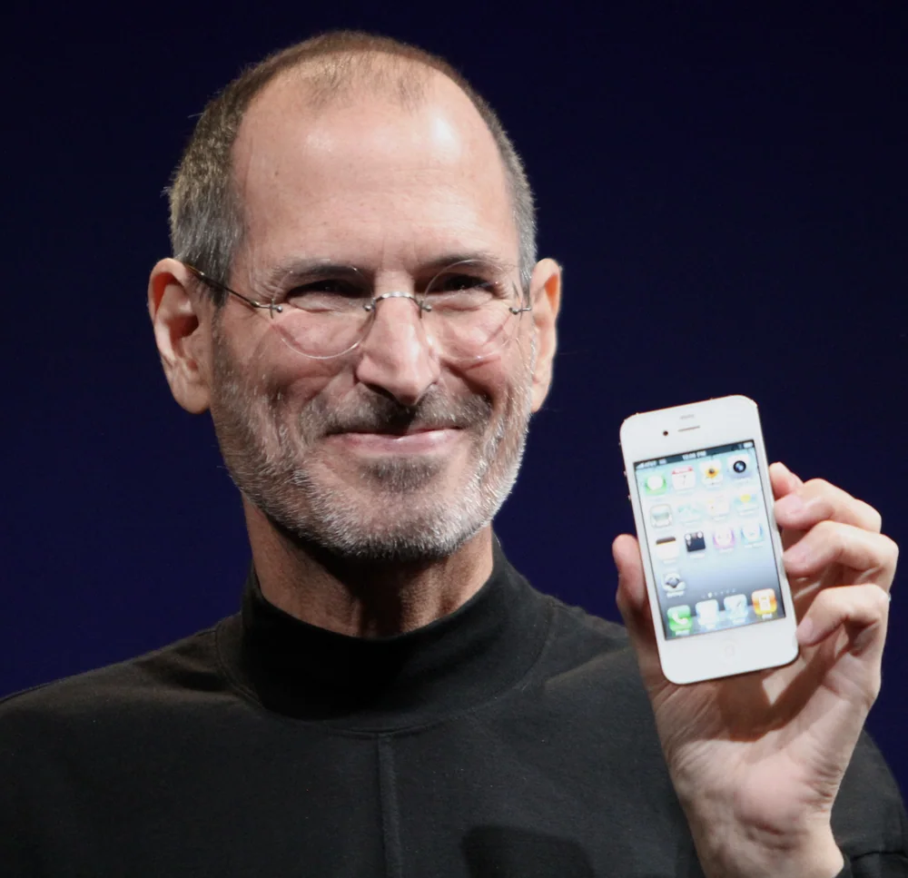
联合创始人，两次掌权。第一次做出 Macintosh，第二次用 iMac、iPod、iPhone 把苹果从破产边缘带回世界第一梯队。他的产品哲学是「做减法」，1998 年一次砍掉七成产品线。
运营出身，把苹果做成一台精密机器：市值从 3000 亿做到最高触及 3 万亿美元，开辟 Apple Watch、AirPods、服务订阅与自研芯片四条新曲线，任内完成史上最大规模回购。
2001 年加入苹果，长期负责硬件工程，主导了 Mac 转向自研芯片、iPhone 与 iPad 的结构设计。2026 年 9 月 1 日就任第八任 CEO，是苹果第一位工程师出身的掌门人。
全部为真实照片，来源见下方「参考来源」。
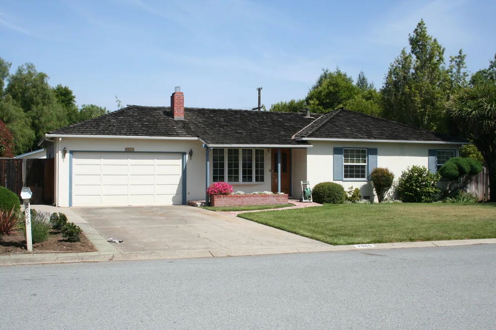
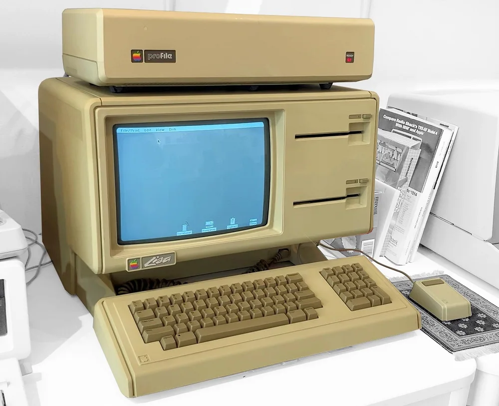
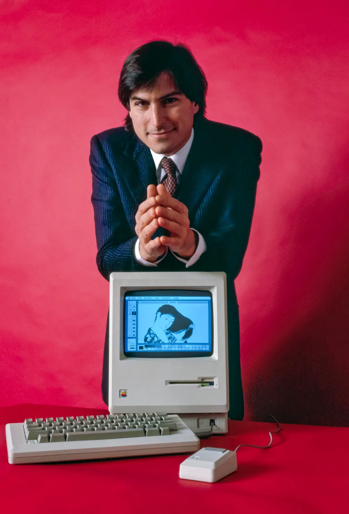
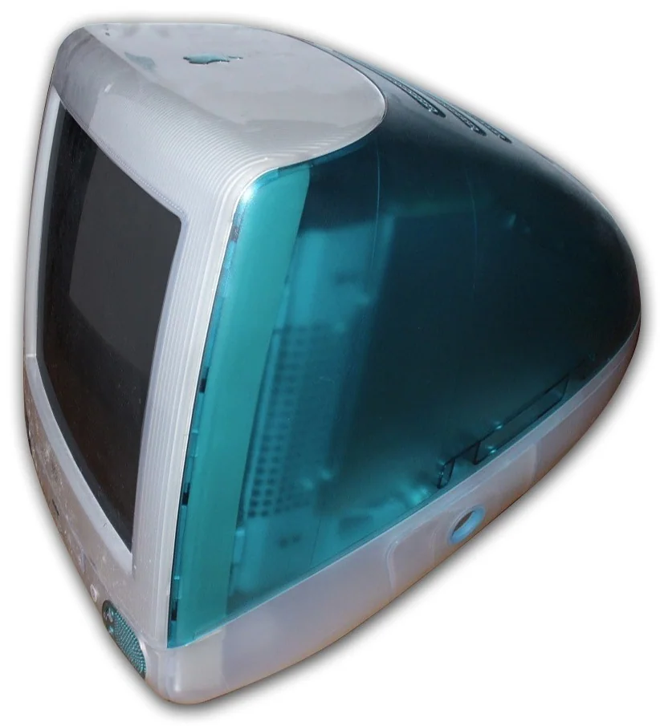
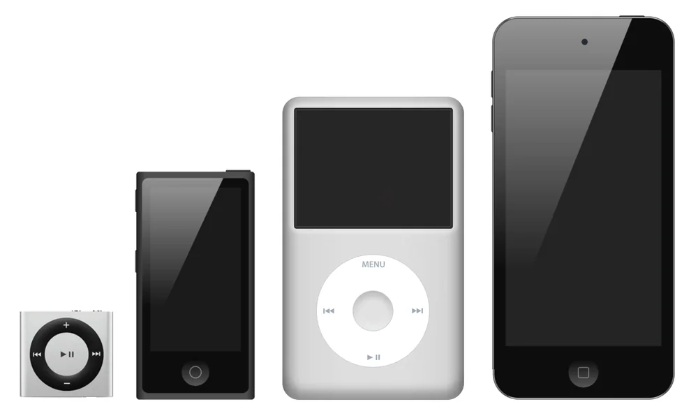
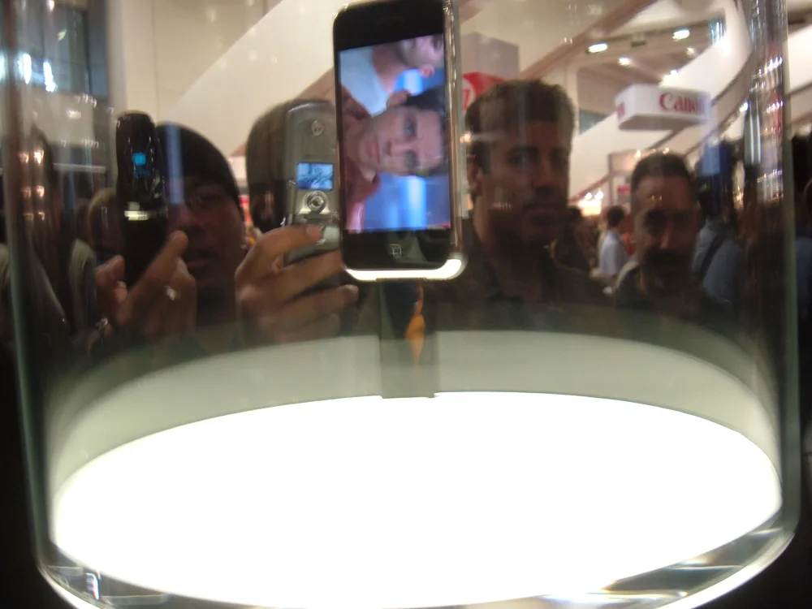
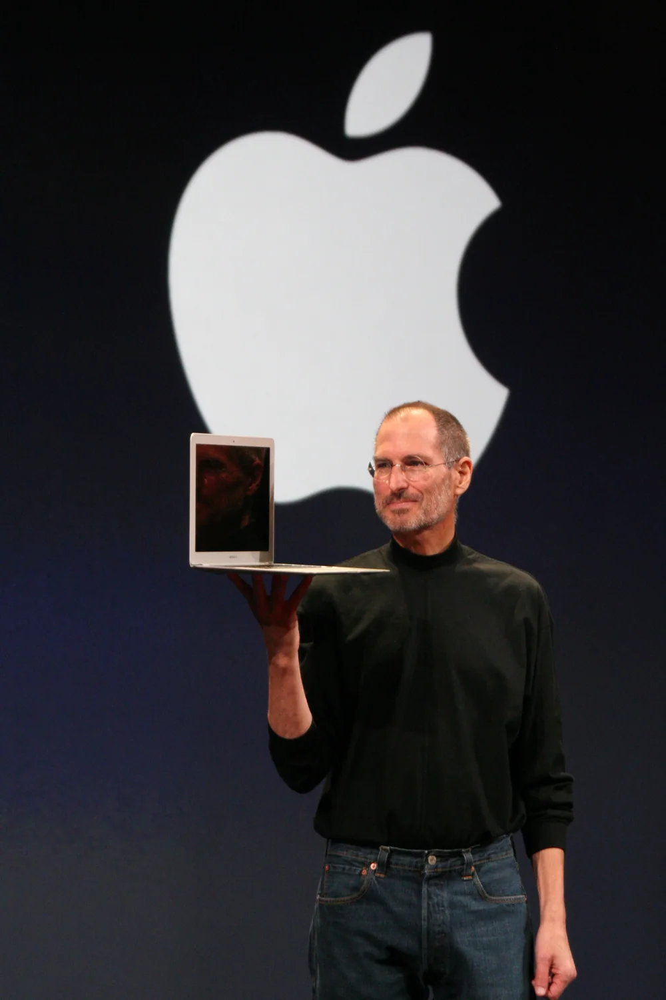
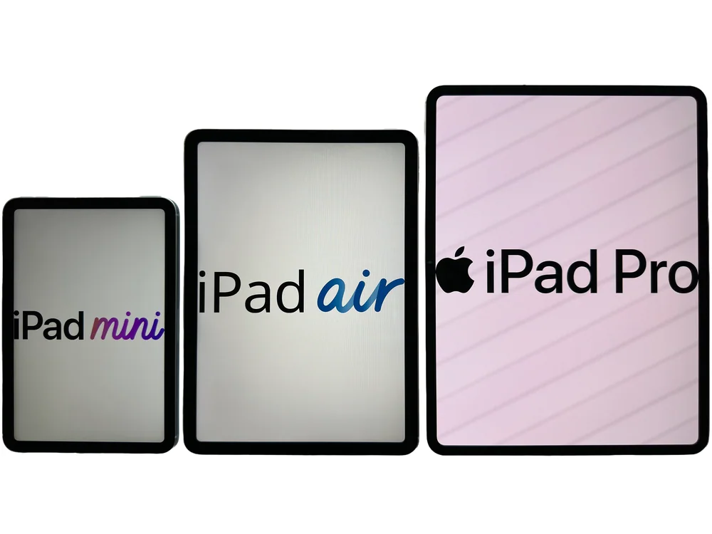
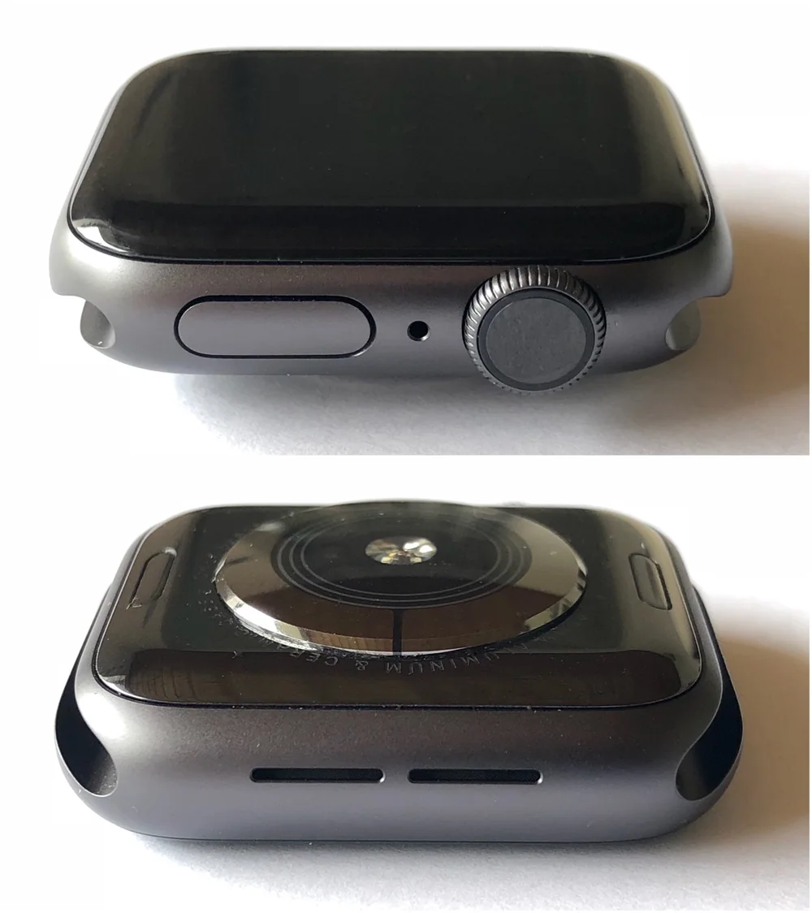
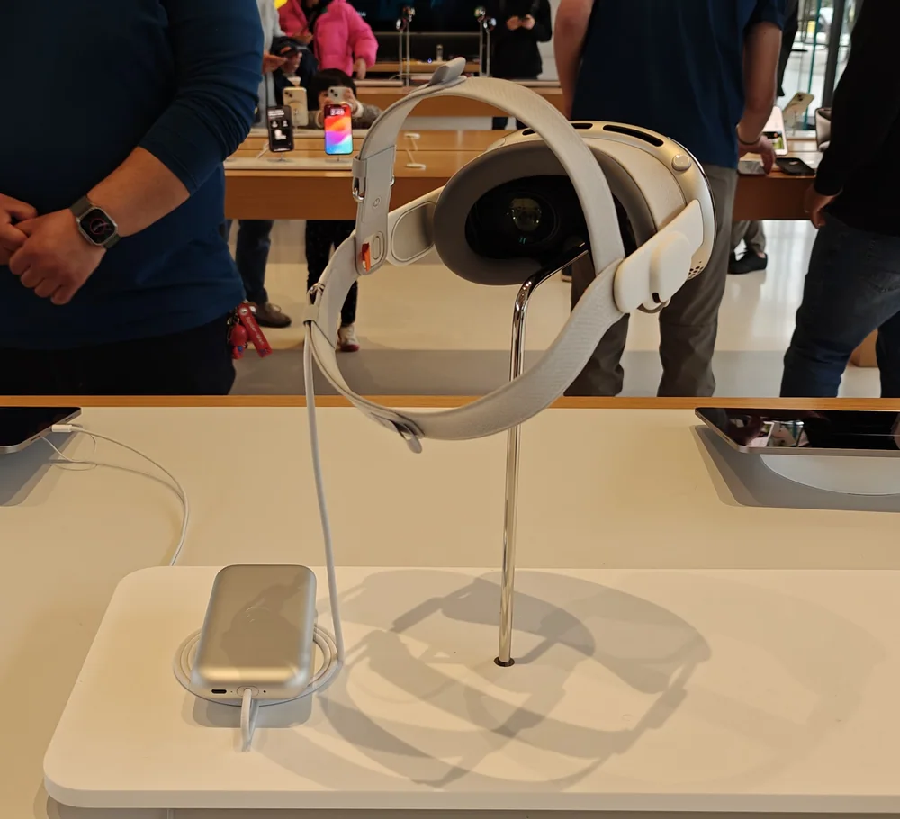